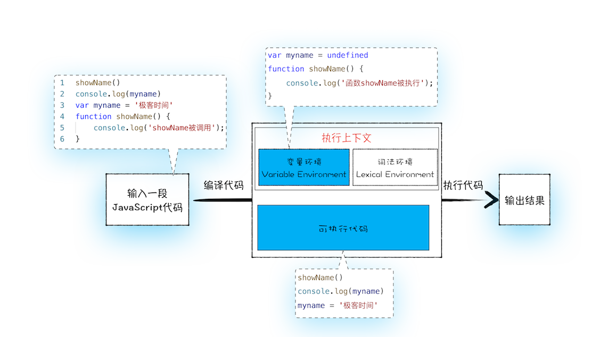
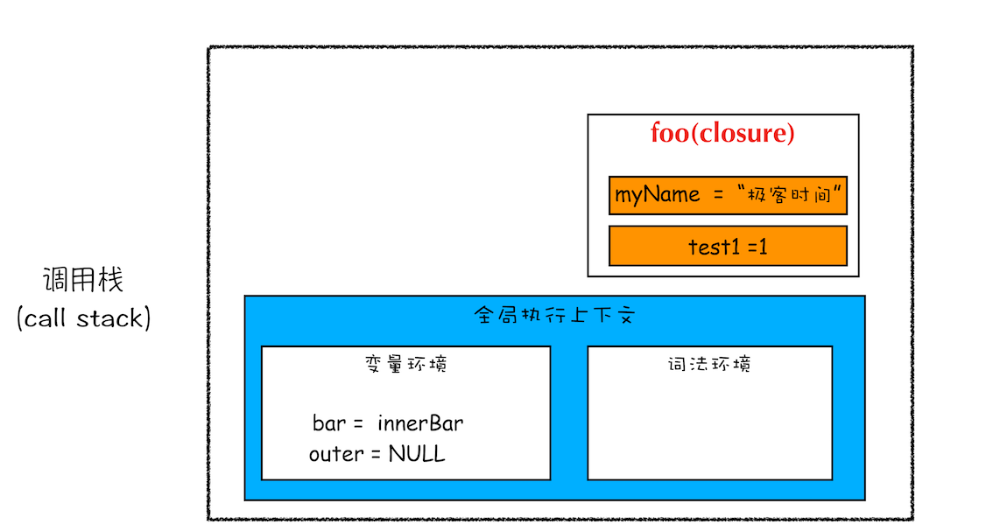

浏览器中JavaScript的执行机制
函数调用栈
变量提升（Hoisting）
JavaScript中，var变量声明会有一个顺序上的提升
比如我们的属性变量：

再比如我们的函数变量：

1 | showName() |
经过变量提升后，实际的顺序为：
1 | var myname=undefined |
如下图示：

执行流程
从概念的字面意义上来看，“变量提升”意味着变量和函数的声明会在物理层面移动到代码的最前面，正如我们所模拟的那样。但，这并不准确。实际上变量和函数声明在代码里的位置是不会改变的，而且是在编译阶段被JavaScript引擎放入内存中。对，你没听错，一段JavaScript代码在执行之前需要被JavaScript引擎编译，编译完成之后，才会进入执行阶段。大致流程你可以参考下图：

1.编译阶段
那么编译阶段和变量提升存在什么关系呢？
为了搞清楚这个问题，我们还是回过头来看上面那段模拟变量提升的代码，为了方便介绍，可以把这段代码分成两部分。
第一部分：变量提升部分的代码。
1 | var myname = undefined |
第二部分：执行部分的代码。
1 | showName() |
下面我们就可以把JavaScript的执行流程细化，如下图所示：

可以发现，编译阶段，我们的JS代码会被分成执行上下文和可执行代码
2.执行阶段
JavaScript引擎开始执行“可执行代码”，按照顺序一行一行地执行。下面我们就来一行一行分析下这个执行过程
- 当执行到showName函数时，JavaScript引擎便开始在变量环境对象中查找该函数，由于变量环境对象中存在该函数的引用，所以JavaScript引擎便开始执行该函数，并输出“函数showName被执行”结果。
- 接下来打印“myname”信息，JavaScript引擎继续在变量环境对象中查找该对象，由于变量环境存在myname变量，并且其值为undefined，所以这时候就输出undefined。
- 接下来执行第3行，把“极客时间”赋给myname变量，赋值后变量环境中的myname属性值改变为“极客时间”
- 对于变量名相同的问题，后面的会直接覆盖前面的赋值操作。
调用栈
编译阶段会涉及到函数调用栈
JavaScript引擎正是利用栈的这种结构来管理执行上下文的。在执行上下文创建好后，JavaScript引擎会将执行上下文压入栈中，通常把这种用来管理执行上下文的栈称为执行上下文栈，又称调用栈。
1 | var a = 2 |
上面这段代码，我们分析一下调用栈的过程
创建全局上下文，并将其压入栈底。如下图所示

变量a、函数add和addAll都保存到了全局上下文的变量环境对象中。
紧接着，执行变量赋值和函数执行操作，如下图示

当执行函数addAll时，JS引擎会编译该函数，并为其创建一个执行上下文，压入栈中

同样是，在函数内部，也是先申明，变量提升，再执行
当执行addAll时，内部又会为add函数创建一个执行上下文，押入栈中

当add函数返回时，该函数的执行上下文就会从栈顶弹出，并将result的值设置为add函数的返回值，也就是9
从栈顶执行到栈底，表示整个JavaScript流程执行结束了。
let和const的引入
块级作用域
JS的var变量只有函数作用域，这样会引发很多意想不到的问题，这里就不阐述了
ES6中通过let和const关键字，让JS也有了块级作用域
1 | function foo(){ |
这里的{}中的let变量，只会在该{}中生效，但是var变量却是foo函数中都有效
实现原理
通过执行上下文中的词法环境来实现let，const的块级作用域
我们来分析下上面代码的流程
1.编译并创建执行上下文

通过上图，我们可以得出以下结论：
- 函数内部通过var声明的变量，在编译阶段全都被存放到变量环境里面了。
- 通过let声明的变量，在编译阶段会被存放到词法环境（Lexical Environment）中。
- 在函数的作用域内部，通过let声明的变量并没有被存放到词法环境中。
- 接下来，第二步继续执行代码，当执行到代码块里面时，变量环境中a的值已经被设置成了1，词法环境中b的值已经被设置成了2。
2.代码块变量的执行
这时候函数的执行上下文就如下图所示：

- 声明的变量执行完后，进入执行阶段
- 此时外层的let b赋值，代码块执行，变量还是先声明在赋值
其实，在词法环境内部，维护了一个小型栈结构，栈底是函数最外层的变量，进入一个作用域块后，就会把该作用域块内部的变量压到栈顶；当作用域执行完成之后，该作用域的信息就会从栈顶弹出，这就是词法环境的结构。需要注意下，我这里所讲的变量是指通过let或者const声明的变量。

当作用域块执行结束之后，其内部定义的变量就会从词法环境的栈顶弹出，最终执行上下文如下图所示：

这样我们代码块中的变量就实现了只在代码块中起作用。
3.总结
通过词法环境的小型栈来实现了代码块中let和const变量的块级作用域效果
闭包
理解作用域链是理解闭包的基础
作用域链
每个执行上下文的变量环境中，都包含了一个外部引用，用来指向外部的执行上下文，我们把这个外部引用称为outer。
当一段JS代码使用了一个变量时，引擎会在“当前执行上下文”中寻找该变量，如果没有找到，会寻找其外部引用里的“执行上下文”中变量，
1 | function bar() { |
比如上面代码，bar中的myName没有找到，会寻找全局中的myName，分析入下图示：


此时，你可能又会疑惑，为啥bar函数不是引用foo函数里面的myName变量，这就有涉及到外部引用out的引用规则
词法作用域
词法作用域就是指作用域是由代码中函数声明的位置来决定的，所以词法作用域是静态的作用域，通过它就能够预测代码在执行过程中如何查找标识符
看下面这张图：

从图中可以看出，词法作用域就是根据代码的位置来决定的，其中 main 函数包含了 bar 函数，bar 函数中包含了 foo 函数，因为 JavaScript 作用域链是由词法作用域决定的，所以整个词法作用域链的顺序是：foo 函数作用域—>bar 函数作用域—>main 函数作用域—> 全局作用域。
块级作用域中变量查找
1 | function bar() { |
直接上图：

也是正常的理解：顺序为 ：自己的块级作用域->自己的上下文变量环境->out的块级作用域->out上下文变量环境
闭包
闭包的最直观解释就是函数内嵌套了函数，并且内部函数引用了外部函数的变量
我们来看下面的代码
1 | function foo() { |
首先我们看看当执行到 foo 函数内部的return innerBar这行代码时调用栈的情况，你可以参考下图：

根据词法作用域的规则，内部函数 getName 和 setName 总是可以访问它们的外部函数 foo 中的变量，所以当 innerBar 对象返回给全局变量 bar 时，虽然 foo 函数已经执行结束，但是 getName 和 setName 函数依然可以使用 foo 函数中的变量 myName 和 test1。所以当 foo 函数执行完成之后，其整个调用栈的状态如下图所示：

从上图可以看出，foo 函数执行完成之后，其执行上下文从栈顶弹出了，但是由于返回的 setName 和 getName 方法中使用了 foo 函数内部的变量 myName 和 test1，所以这两个变量依然保存在内存中。这像极了 setName 和 getName 方法背的一个专属背包，无论在哪里调用了 setName 和 getName 方法，它们都会背着这个 foo 函数的专属背包。
之所以是专属背包，是因为除了 setName 和 getName 函数之外，其他任何地方都是无法访问该背包的，我们就可以把这个背包称为 foo 函数的闭包。
- 在 JavaScript 中，根据词法作用域的规则，内部函数总是可以访问其外部函数中声明的变量，当通过调用一个外部函数返回一个内部函数后，即使该外部函数已经执行结束了，但是内部函数引用外部函数的变量依然保存在内存中，我们就把这些变量的集合称为闭包
那这些闭包是如何使用的呢？当执行到 bar.setName 方法中的myName = “极客邦”这句代码时，JavaScript 引擎会沿着“当前执行上下文–>foo 函数闭包–> 全局执行上下文”的顺序来查找 myName 变量，你可以参考下面的调用栈状态图：

this的认识
关于 this，我们还是得先从执行上下文说起。在前面几篇文章中，我们提到执行上下文中包含了变量环境、词法环境、外部环境，但其实还有一个 this 没有提及，具体你可以参考下图：

从图中可以看出，this 是和执行上下文绑定的，也就是说每个执行上下文中都有一个 this。中我们提到过，执行上下文主要分为三种——全局执行上下文、函数执行上下文和 eval 执行上下文，所以对应的 this 也只有这三种——全局执行上下文中的 this、函数中的 this 和 eval 中的 this。
实际上，this是不固定的，一般而言，对象.方法使用的时候，函数中this指向的就是该对象，如果是直接调用，一般默认都是window对象
比如，如下代码
1 | var myObj = { |
可以看到，showThis由myObj调用，所以this就是myObj，但是showThis内部的函数bar被调用的时候，前面没有对象引用，默认是window，所以bar函数中的this指向的就是window
避免this问题
- call，bind，apply
- 定义变量改变，比如外部定义变量 let that=this
- 使用箭头函数